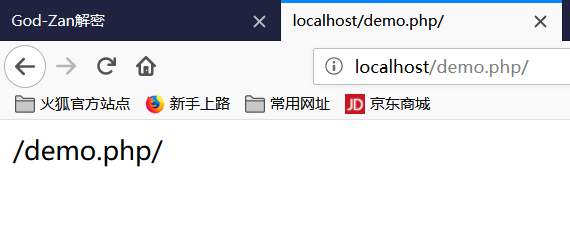
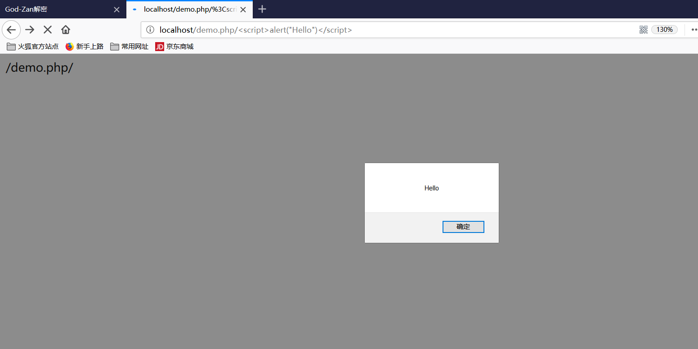
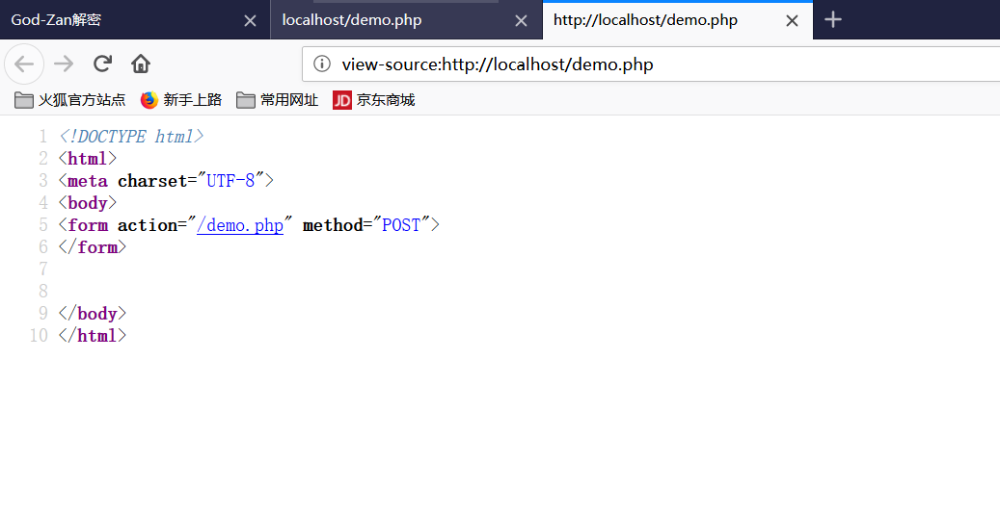

1、超级全局变量
超级全局变量在PHP 4.1.0之后被启用, 是PHP系统中自带的变量，在一个脚本的全部作用域中都可用。
$_SERVER[“PHP_SELF”];
PHP中预定义了几个超级全局变量（superglobals） ，这意味着它们在一个脚本的全部作用域中都可用。 你不需要特别说明，就可以在函数及类中使用。
PHP 超级全局变量列表:
- $GLOBALS
- $_SERVER
- $_REQUEST
- $_POST
- $_GET
- $_FILES
- $_ENV
- $_COOKIE
- $_SESSION
2、PHP $_SERVER
$_SERVER 是一个包含了诸如头信息(header)、路径(path)、以及脚本位置(script locations)等等信息的数组。这个数组中的项目由 Web 服务器创建。不能保证每个服务器都提供全部项目；服务器可能会忽略一些，或者提供一些没有在这里列举出来的项目。
<?php
echo $_SERVER['PHP_SELF'];
echo "<br>";
echo $_SERVER['SERVER_NAME'];
echo "<br>";
echo $_SERVER['HTTP_HOST'];
echo "<br>";
echo $_SERVER['HTTP_REFERER'];
echo "<br>";
echo $_SERVER['HTTP_USER_AGENT'];
echo "<br>";
echo $_SERVER['SCRIPT_NAME'];
?>3、$_SERVER[’PHP_SELF’]的跨站脚本攻击
$_SERVER[‘PHP_SELF’]是PHP语言中的“服务器端系统变量”，它的值是当前php文件相对于网站根目录的位置地址.
比如当
<?php
echo $_SERVER['PHP_SELF'];
?>正常访问是这样的

显然这样可以很方便XSS，因为直接echo在页面上，所以只需要在尾部加上/<script>alert("Hello")</script>即可，建议大家先URL加密一次，不过问题不大

当然正常的代码不会直接输出在界面上，但是当开发人员一个表单的在action本页面，则可能会
<form action="<?php echo $_SERVER["PHP_SELF"];?>"method="POST">
.....
</form>正常访问是这样的

但是 当你在尾部加上
/"><script>alert('xss')</script>则由原来生成的
<form action="/demo.php/{{多加入的参数}}" method="POST">变成了，符号是自己加上去，表示区分
<form action="/demo.php/{{">}}" method="POST">最终
<form action="/demo.php/"><script>alert('xss')</script>" method="POST">成功执行了XSS

3.1、解决办法-> 通过htmlentities($_SERVER[‘PHP_SELF’]);过滤
PS:$_SERVER 变量中的重要元素:
| 元素/代码 | 描述 |
|---|---|
| $_SERVER[‘PHP_SELF’] | 返回当前执行脚本的文件名。 |
| $_SERVER[‘GATEWAY_INTERFACE’] | 返回服务器使用的 CGI 规范的版本。 |
| $_SERVER[‘SERVER_ADDR’] | 返回当前运行脚本所在的服务器的 IP 地址。 |
| $_SERVER[‘SERVER_NAME’] | 返回当前运行脚本所在的服务器的主机名。 |
| $_SERVER[‘SERVER_SOFTWARE’] | 返回服务器标识字符串（比如 Apache/2.2.24）。 |
| $_SERVER[‘SERVER_PROTOCOL’] | 返回请求页面时通信协议的名称和版本（例如，“HTTP/1.0”）。 |
| $_SERVER[‘REQUEST_METHOD’] | 返回访问页面使用的请求方法（例如 POST）。 |
| $_SERVER[‘REQUEST_TIME’] | 返回请求开始时的时间戳（例如 1577687494）。 |
| $_SERVER[‘QUERY_STRING’] | 返回查询字符串，如果是通过查询字符串访问此页面。 |
| $_SERVER[‘HTTP_ACCEPT’] | 返回来自当前请求的请求头。 |
| $_SERVER[‘HTTP_ACCEPT_CHARSET’] | 返回来自当前请求的 Accept_Charset 头（ 例如 utf-8,ISO-8859-1） |
| $_SERVER[‘HTTP_HOST’] | 返回来自当前请求的 Host 头。 |
| $_SERVER[‘HTTP_REFERER’] | 返回当前页面的完整 URL（不可靠，因为不是所有用户代理都支持）。 |
| $_SERVER[‘HTTPS’] | 是否通过安全 HTTP 协议查询脚本。 |
| $_SERVER[‘REMOTE_ADDR’] | 返回浏览当前页面的用户的 IP 地址。 |
| $_SERVER[‘REMOTE_HOST’] | 返回浏览当前页面的用户的主机名。 |
| $_SERVER[‘REMOTE_PORT’] | 返回用户机器上连接到 Web 服务器所使用的端口号。 |
| $_SERVER[‘SCRIPT_FILENAME’] | 返回当前执行脚本的绝对路径。 |
| $_SERVER[‘SERVER_ADMIN’] | 该值指明了 Apache 服务器配置文件中的 SERVER_ADMIN 参数。 |
| $_SERVER[‘SERVER_PORT’] | Web 服务器使用的端口。默认值为 “80”。 |
| $_SERVER[‘SERVER_SIGNATURE’] | 返回服务器版本和虚拟主机名。 |
| $_SERVER[‘PATH_TRANSLATED’] | 当前脚本所在文件系统（非文档根目录）的基本路径。 |
| $_SERVER[‘SCRIPT_NAME’] | 返回当前脚本的路径。 |
| $_SERVER[‘SCRIPT_URI’] | 返回当前页面的 URI。 |